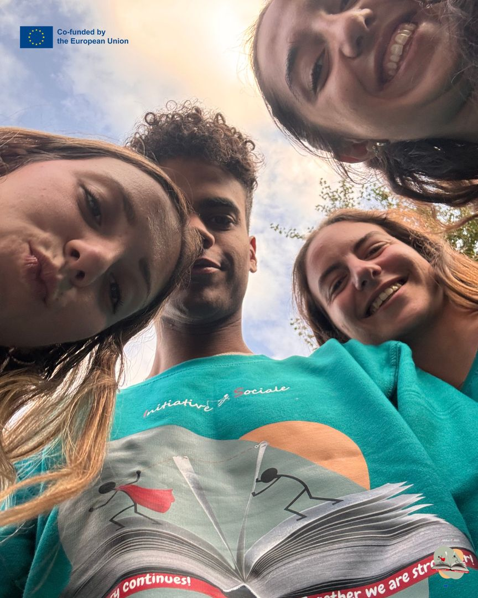
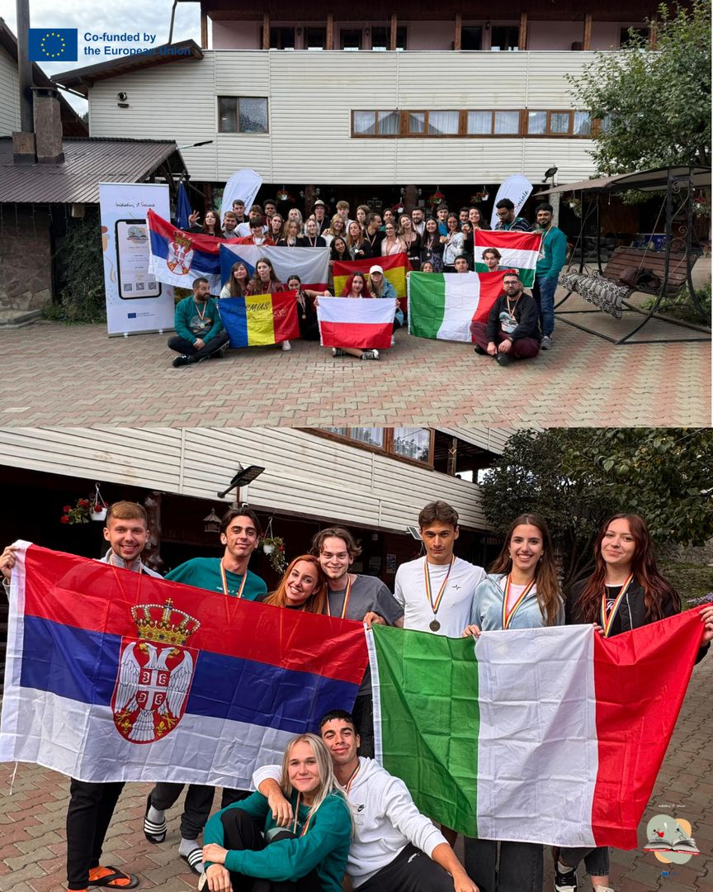

LevelUP · rural entrepreneurship and local communities
Rural Youth in Action
Rural Youth in Action
The village is not a place you leave, but one you can change. Young people discovered how local initiative can transform a community.



SEP 2025LevelUP
Description
In the third year, through LevelUP, AIS implemented activities dedicated to the community, career guidance and planning one's own path. Participants worked hands-on, collaborated in international teams and connected the Erasmus+ experience with local, community and professional realities.
Participants developed communication, teamwork, critical thinking, reflection, self-confidence, initiative, adaptability, intercultural cooperation and the ability to plan their educational and professional future more consciously.
- Dates
- 18–28 September 2025
- Place
- Argestru, Vatra Dornei, Romania
- Theme
- Rural entrepreneurship, local resources, community
- Framework
- AIS Erasmus+ Accreditation
- Stage
- Year 3
- Programme
- LevelUP
- Erasmus+ project
- 2025-1-RO01-KA151-YOU-000299424
22Photos
Photos · Rural Youth in Action
SEP 2025From the project sheet
Empowering Young Entrepreneurs and Rural Communities
people
countries
young participants
young people with fewer opportunities
From 18 to 28 September 2025, Asociația Inițiative Sociale (AIS) hosted the international youth exchange “LevelUP: Rural Youth in Action” (A5) in Argestru, Vatra Dornei, Romania. It was the fifth mobility carried out under the Erasmus+ accreditation in the field of youth (2022-1-RO01-KA150-YOU-000110034), through project 2025-1-RO01-KA151-YOU-000299424.
The mobility brought together 39 people from 7 countries (Czechia, Italy, Poland, Romania, Serbia, Spain and Hungary): 30 young people, 7 group leaders and 2 facilitators.
Inclusion was at the heart of the project: 20 young people with fewer opportunities took part (66.7% of all young participants). They faced economic, geographical, social, cultural, educational or health barriers, and the mobility gave them access to international opportunities for learning, entrepreneurial development and intercultural cooperation.
The main aim of the mobility was to develop young people’s entrepreneurial skills and to promote rural entrepreneurship as a tool for economic, social and community development, making good use of the local resources, traditions and opportunities of rural communities.
The project contributed directly to the four strategic objectives of the AIS accreditation: O1 – promoting entrepreneurship, inclusion and diversity; O2 – developing personal and professional skills; O3 – strengthening organisational capacity; O4 – expanding partnerships and young people’s active participation.
Over 9 days of educational activities, the participants took part in a non-formal education programme based on interactive workshops, brainstorming, business simulations, case studies, debates, work in multicultural teams, study visits and participatory reflection.
The programme included activities such as “Rural Realities: Voices from Our Villages”, in which the national teams presented the challenges and opportunities of rural communities in their countries, and “Café de la Countryside”, a World Café activity for sharing experiences and finding entrepreneurial solutions to local community needs.
There was a strong focus on learning by experience and on contact with rural life, through the activity “Learning By Doing: Rural Entrepreneurship in RO” and study visits to the Poiana Stampei Secondary School and Păstrăvăria lui Andrei (a trout farm). The participants discovered local traditions and crafts, tried hands-on activities such as traditional egg painting, and met local entrepreneurs, looking at the challenges, resources and opportunities of running a business in the countryside.
An intercultural tour of Vatra Dornei completed the learning experience, giving the young people a chance to discover the area’s cultural and natural heritage and the link between tourism, traditions and local economic development.
The hands-on activities culminated in a Rural Business Edition, in which eight multicultural teams developed and presented their own rural business concepts.
A5 produced concrete educational results and materials, created with the direct involvement of the participants:
- 7 national presentations on the challenges and opportunities of rural entrepreneurship in the participating countries.
- 8 practice firms developed by multicultural teams, beating the initial target of at least 5 business concepts.
- 8 complete Company Simulation Packs, each with a Business Plan, Business Model Canvas, logo, poster, presentation and Video Pitch.
- 8 business concepts: TradCraft, Green Flag, Watts Up Solar, Frenzy Farm, Rural Revival, MGP by 3MG, Checkmate and Roaming Roots.
- Educational materials, presentations, photos and videos used to promote the results and share the learning experiences.
- 7 national dissemination reports documenting the activities organised after the mobility.
The eight business concepts tackled a range of economic opportunities, such as preserving traditional crafts, organic farming, renewable energy, reviving rural buildings, transporting farm produce, responsible tourism and developing community spaces.
By developing these practice firms, the participants went through the main stages of starting a business: identifying community needs, generating ideas, market analysis, building the business model, financial planning, branding and pitching the concept to an audience.
Completing 8 business packs, against at least 5 planned, means the initial target was exceeded by 60%.
The participants developed skills in communication, leadership, negotiation, creativity, critical thinking, problem-solving, financial planning, teamwork, adaptability and using digital tools.
The intercultural activities helped improve language skills, build self-confidence and strengthen respect for cultural diversity.
The learning process was monitored through daily reflections, evaluations and the Youthpass approach, used to identify and recognise the skills developed.
The mobility was coordinated by AIS together with its 6 international partner organisations, through a structured system of planning, implementation, monitoring and evaluation.
Preparation included selecting the participants, signing the partnership agreements, educational and intercultural preparation, designing the programme and arranging travel and accommodation at Pensiunea Siady in Argestru, Vatra Dornei.
Management was supported by online coordination meetings, digital collaboration tools and constant communication with partners and group leaders.
During the mobility, the daily “Wow, I got that!” and “Daily Reflection” sessions, the evaluations and the meetings with group leaders made it possible to monitor learning progress, spot difficulties and adapt the activities to the participants’ needs.
Special attention was paid to inclusion, active participation, safety and sustainability, including making good use of local resources and encouraging environmentally responsible practices.
The post-mobility evaluation, based on 37 questionnaires completed out of 37 possible, showed a high level of satisfaction and a positive contribution to personal, social and entrepreneurial development.
Key evaluation results:
- 4.70 out of 5 points – overall satisfaction with the Erasmus+ experience.
- 4.41 out of 5 points – perceived contribution of the mobility to personal development.
- 83.8% of respondents (31 of 37) noticed positive personal changes after taking part.
- 97.3% (36 of 37) confirmed that the educational materials helped develop their knowledge and skills in rural entrepreneurship.
- 100% (37 of 37) felt the project fostered a sense of community and collaboration.
- 94.6% (35 of 37) rated positively how the activities helped them understand rural entrepreneurship.
- 94.6% (35 of 37) said they felt comfortable working with people from other countries and cultures.
- 97.3% (36 of 37) said they would like to take part in similar Erasmus+ projects in the future.
One of the most relevant results of A5 was young people’s growing interest in developing business initiatives suited to rural communities.
In the post-mobility evaluation, 11 of the 37 respondents (29.7%) said they had found a concrete idea they would like to develop back home. The ideas included initiatives in organic farming, solar energy, preserving cultural heritage and building small local businesses.
In addition, 25 of the 37 respondents (67.6%) rated their own motivation to apply rural entrepreneurship principles in their community at 4 or 5 out of 5.
These results show an interest in putting the skills gained into practice and the potential for future business initiatives.
But the project’s impact went beyond entrepreneurship. 22 of the 37 respondents (59.5%) said they had made international contacts they would like to build on in future collaborations, helping to grow networks for cooperation and sharing experience.
Feedback from the 7 group leaders confirmed the relevance of the project: all of them felt the participants were “Very satisfied” and that the mobility fully met their needs and expectations.
The evaluation by 5 partner organisations confirmed the quality of management and cooperation, with average scores of 4.8 out of 5 for overall collaboration, the quality of the educational programme and meeting the objectives. All five organisations said they would like to keep working with AIS.
The mobility thus helped strengthen organisational capacity, international cooperation and relationships with local actors involved in entrepreneurship education and rural community development.
The results of A5 were promoted through public presentations, workshops, information meetings, social media, educational materials and multiplier activities organised by participants and partner organisations.
For this mobility, 10 dissemination and information sessions were documented, with about 160 reported attendances in total, run by the teams of the seven participating countries.
Highlights include:
- Romania: four dissemination sessions with 33 attendances, including presentations at the “Virgil Madgearu” Economic College and the National University of Science and Technology Politehnica Bucharest.
- Poland: a presentation for 23 students at a high school in Kłodzko.
- Serbia: a session for 21 students at the “Svetozar Marković” Grammar School in Niš.
- Czechia: a presentation for 8 young people at Gymnázium Duhovka.
- Spain: a university presentation in Valladolid, with 24 participants.
- Hungary: an activity at Leonardo Gimnázium in Budapest, with 11 participants.
- Italy: a presentation at Polo Liceale “R. Mattioli” for about 40 students.
The activities presented the learning experiences, the business concepts developed, the opportunities of rural entrepreneurship and the benefits of taking part in Erasmus+ projects.
Direct dissemination was complemented by online campaigns on Facebook, Instagram and LinkedIn. The A5 monitoring log includes 34 online dissemination links from participants and organisations in the seven countries.
By involving the participants as multipliers of the results, the project helped promote rural entrepreneurship, non-formal education and Erasmus+ opportunities, inspiring other young people to start initiatives in their own communities.
“LevelUP: Rural Youth in Action” was an important stage in implementing the Erasmus+ accreditation of Asociația Inițiative Sociale, helping to develop entrepreneurial skills, promote social inclusion and intercultural cooperation, and strengthen international partnerships.
Through the involvement of 39 people from 7 countries, including 20 young people with fewer opportunities, the 8 practice firms, the business plans and the positive evaluation results, the mobility showed the value of non-formal education in encouraging entrepreneurial initiative and rural community development.
The concrete business ideas found by 11 respondents, together with the growing interest in entrepreneurship, the practical skills developed and the stronger international relationships, show the project’s potential to inspire future economic and community initiatives.
The A5 experience confirms how important it is to build on local resources, traditions and young people’s creativity to develop more active, innovative and sustainable rural communities.
The story continues! Together we are stronger!